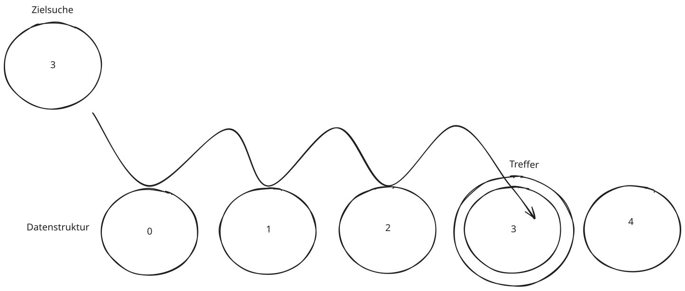
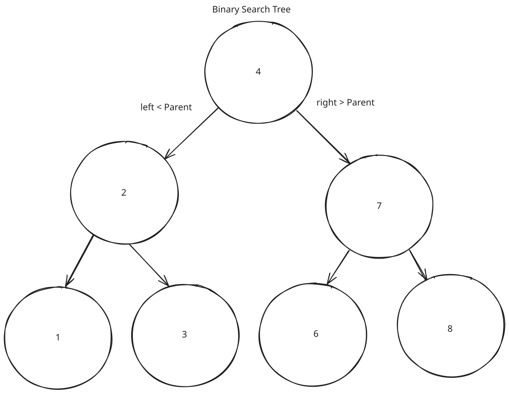
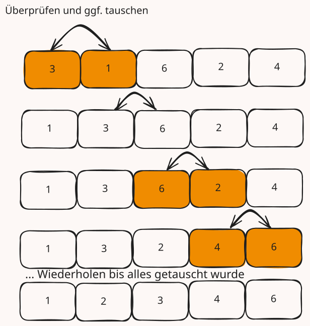
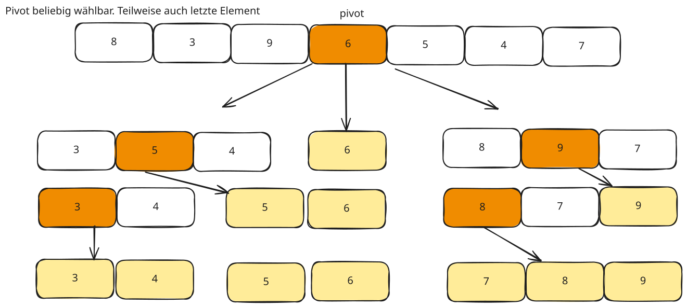
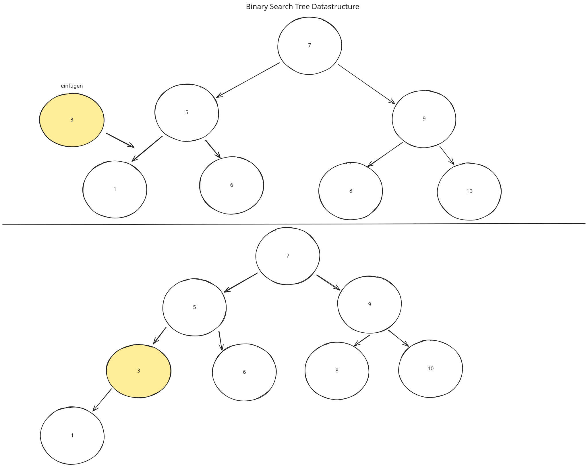

📃 Algorithmen und Datenstruktur
Einführung in Algorithmen und Datenstrukturen
Ein Algorithmus ist eine systematische Methode zur Lösung eines Problems in endlich vielen Schritten. Er kann als Rezept oder Anleitung verstanden werden.
Eine Datenstruktur ist eine Möglichkeit, Daten effizient zu speichern und zu organisieren.
2. Suchalgorithmen
2.1 Lineare Suche
- Die einfachste Methode zur Suche in einer Liste.
- Durchläuft alle Elemente nacheinander.
- Laufzeit: O(n) im Worst Case.
📋 Test der Tabs-Funktion
=== "📝 C-Code"
```c
#include <stdio.h>
int main() {
printf("Hello, World!\n");
return 0;
}
```
=== "📊 Python-Code"
```python
def greet():
print("Hello, World!")
greet()
```
#include <stdio.h>
int lineare_suche(int arr[], int n, int ziel) {
for (int i = 0; i < n; i++) {
if (arr[i] == ziel)
return i; // Index des gefundenen Elements
}
return -1; // Nicht gefunden
}
int main() {
int arr[] = {4, 2, 9, 7, 5, 8};
int n = sizeof(arr) / sizeof(arr[0]);
int ziel = 7;
int index = lineare_suche(arr, n, ziel);
if (index != -1)
printf("Element gefunden an Index %d\n", index);
else
printf("Element nicht gefunden\n");
return 0;
}

2.2 Binäre Suche (Binary Search)
- Prinzip: Linker Knoten < Parent; Rechter Knoten > Parent.
- Funktioniert nur bei sortierten Listen.
- Durchsucht Liste durch wiederholtes Halbieren.
- Laufzeit: O(log n) im Worst Case.
#include <stdio.h>
int binaere_suche(int arr[], int links, int rechts, int ziel) {
while (links <= rechts) {
int mitte = links + (rechts - links) / 2;
if (arr[mitte] == ziel)
return mitte;
else if (arr[mitte] < ziel)
links = mitte + 1;
else
rechts = mitte - 1;
}
return -1; // Nicht gefunden
}
int main() {
int arr[] = {1, 3, 5, 7, 9, 11};
int n = sizeof(arr) / sizeof(arr[0]);
int ziel = 7;
int index = binaere_suche(arr, 0, n - 1, ziel);
if (index != -1)
printf("Element gefunden an Index %d\n", index);
else
printf("Element nicht gefunden\n");
return 0;
}

3. Sortieralgorithmen
3.1 Bubble Sort
- Vergleicht benachbarte Elemente und vertauscht sie.
- Sehr ineffizient: O(n²).
Schritt-für-Schritt
- Gehe durch die Liste und vergleiche benachbarte Elemente.
- Tausche sie, falls das linke größer als das rechte ist.
- Wiederhole den Vorgang, bis keine Vertauschung mehr nötig ist.
void bubble_sort(int arr[], int n) { //Arraygröße als Parameter in C
for (int i = 0; i < n - 1; i++) {
for (int j = 0; j < n - i - 1; j++) {
if (arr[j] > arr[j + 1]) {
// Elemente tauschen
int temp = arr[j];
arr[j] = arr[j + 1];
arr[j + 1] = temp;
}
}
}
}

3.2 Quicksort
- Ein Divide & Conquer Algorithmus.
- Wählt ein Pivot-Element aus, partitioniert die Liste und sortiert rekursiv die beiden Hälften.
- Laufzeit: O(n log n) im Durchschnitt.
Schritt-für-Schritt
- Wähle ein Pivot-Element (z. B. das letzte Element).
- Partitioniere die Liste in:
- Elemente kleiner als Pivot.
- Das Pivot-Element.
- Elemente größer als Pivot.
- Rufe Quicksort rekursiv für die beiden Teile auf.
#include <stdio.h>
void swap(int *a, int *b) {
int temp = *a;
*a = *b;
*b = temp;
}
int partition(int arr[], int low, int high) {
int pivot = arr[high];
int i = (low - 1);
for (int j = low; j < high; j++) {
if (arr[j] < pivot) {
i++;
swap(&arr[i], &arr[j]);
}
}
swap(&arr[i + 1], &arr[high]);
return (i + 1);
}
void quicksort(int arr[], int low, int high) {
if (low < high) {
int pi = partition(arr, low, high);
quicksort(arr, low, pi - 1);
quicksort(arr, pi + 1, high);
}
}
void print_array(int arr[], int n) {
for (int i = 0; i < n; i++)
printf("%d ", arr[i]);
printf("\n");
}
int main() {
int arr[] = {5, 3, 8, 4, 2};
int n = sizeof(arr) / sizeof(arr[0]);
quicksort(arr, 0, n - 1);
printf("Sortiertes Array: ");
print_array(arr, n);
return 0;
}
In unserem grafischen Beispiel:
Pivot = Array[Array size / 2]

4. Bäume
Ein Baum ist eine rekursive Datenstruktur mit Knoten, die miteinander verbunden sind. Der oberste Knoten heißt Wurzel.
4.1 Binäre Suchbäume (BST)
- Jeder Knoten hat höchstens zwei Kinder.
- Linkes Kind kleiner, rechtes Kind größer als der Elternknoten.
- Suchen, Einfügen und Löschen in O(log n).
Einfügen in einen BST
- Falls der Baum leer ist → neues Element wird die Wurzel.
- Falls der Wert kleiner ist → gehe nach links.
- Falls der Wert größer ist → gehe nach rechts.
- Wiederhole, bis eine freie Position gefunden wurde.
#include <stdio.h>
#include <stdlib.h>
struct Knoten {
int wert;
struct Knoten *links, *rechts;
};
struct Knoten* neuerKnoten(int wert) {
struct Knoten* knoten = (struct Knoten*)malloc(sizeof(struct Knoten));
knoten->wert = wert;
knoten->links = knoten->rechts = NULL;
return knoten;
}
struct Knoten* einfuegen(struct Knoten* wurzel, int wert) {
if (wurzel == NULL)
return neuerKnoten(wert);
if (wert < wurzel->wert)
wurzel->links = einfuegen(wurzel->links, wert);
else
wurzel->rechts = einfuegen(wurzel->rechts, wert);
return wurzel;
}
void inorder(struct Knoten* wurzel) {
if (wurzel != NULL) {
inorder(wurzel->links);
printf("%d ", wurzel->wert);
inorder(wurzel->rechts);
}
}
int main() {
struct Knoten* wurzel = NULL;
wurzel = einfuegen(wurzel, 5);
wurzel = einfuegen(wurzel, 3);
wurzel = einfuegen(wurzel, 7);
wurzel = einfuegen(wurzel, 2);
wurzel = einfuegen(wurzel, 4);
printf("Inorder Traversierung: ");
inorder(wurzel);
printf("\n");
return 0;
}

5. Heaps und Prioritätswarteschlangen
Ein Heap ist eine spezielle Binärbaum-Datenstruktur:
- Ein Min-Heap hat die Eigenschaft: Der kleinste Wert ist an der Wurzel.
- Ein Max-Heap hat die Eigenschaft: Der größte Wert ist an der Wurzel.
Heap-Operationen
- Einfügen: Element wird am Ende eingefügt und „nach oben geblubbert“.
- Entfernen des Minimums: Wurzel entfernen, letztes Element nach oben setzen und „nach unten sinken“.
Warum ist die Suche in einem Heap ineffizient?
In einem Heap gilt die Heap-Eigenschaft:
- Min-Heap: Eltern ≤ Kinder
- Max-Heap: Eltern ≥ Kinder
Das bedeutet:
- Wir wissen nur, dass der Wurzelknoten der kleinste (Min-Heap) oder größte (Max-Heap) ist.
- Aber wir wissen nicht, wie die anderen Elemente zueinander stehen.
- Keine vollständige Sortierung → Wir können nicht gezielt links oder rechts gehen.
Suchstrategien im Heap
Methode 1: Breitensuche (BFS)
- Level für Level durchsuchen (wie eine Warteschlange).
- Gut, wenn die gesuchte Zahl nah an der Wurzel liegt.
Methode 2: Tiefensuche (DFS)
- Rekursiv nach links und rechts gehen.
- Praktisch, wenn der Baum groß ist.
Typische Anwendungsfälle:
-
Prioritätswarteschlangen (Priority Queues):
- Wenn du Aufgaben nach ihrer Wichtigkeit verarbeiten willst.
- Beispiel: Betriebssysteme verwalten Prozesse mit unterschiedlichen Prioritäten.
- → Immer der höchste Prioritätsprozess läuft zuerst (Min-/Max-Heap).
-
Dijkstra-Algorithmus (kürzeste Wege in Graphen):
- Heap wird verwendet, um den nächsten Knoten mit der kürzesten Distanz schnell zu finden. Mit Min-Heap
- Ohne Heap wäre dieser Algorithmus viel langsamer.
-
Heapsort (Sortieralgorithmus):
- Effizienter Sortieralgorithmus mit $O(n \log n)$ Laufzeit.
- Besser als Bubble Sort oder Insertion Sort.
-
Echtzeit-Systeme:
- Echtzeitspiele, Simulationen, Event-Handling → Aufgaben werden nach Priorität sortiert.
-
Median-Findung (Streaming-Daten):
- Kombination aus Min-Heap und Max-Heap hilft, den Median von Datenströmen effizient zu berechnen.